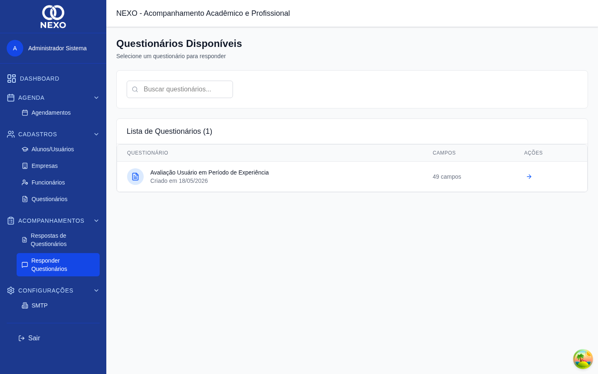
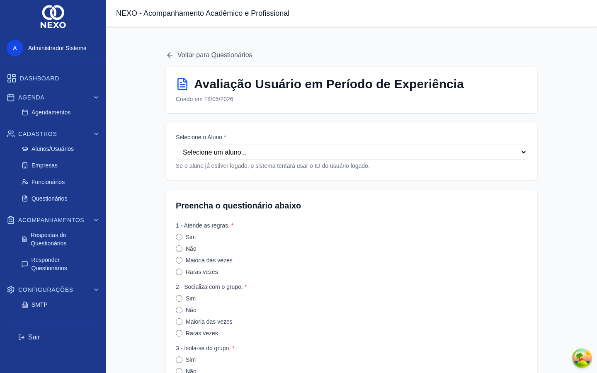
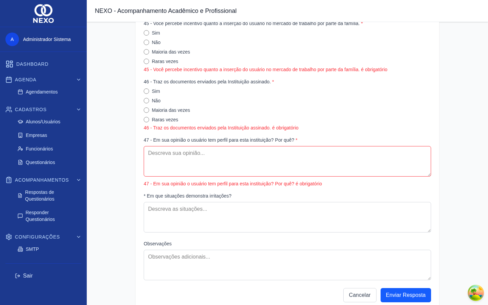

Responder questionários
Aqui você aplica um questionário já criado (veja Questionários) e envia a resposta para um aluno.
| Ação | ADM | RH | COORD | PROF | DIR |
|---|---|---|---|---|---|
| Responder questionário | ✓ | ✓ | ✓ | ✓ | ✓ |
1. Abrir a lista de questionários
No menu lateral, abra Acompanhamentos → Responder Questionários. A lista mostra todos os questionários disponíveis para responder.

2. Selecionar um questionário
-
Clicar em "Responder"
Na linha do questionário desejado, clique no botão "Responder" (ícone de seta).
-
Selecionar o aluno
No topo do formulário, escolha o aluno que está respondendo (ou para quem você está preenchendo).

Formulário com aluno selecionado e campos prontos. -
Preencher as respostas
Responda cada campo conforme o tipo definido pelo construtor do questionário (texto, opções, marcações etc.).
-
Enviar
Clique em Enviar Resposta. Caso falte algum campo obrigatório, o sistema destaca o erro:

Erro de validação em campo obrigatório. -
Confirmação
Após o envio, aparece a tela de confirmação e você é redirecionado automaticamente para a lista.
Resposta enviada com sucesso.
As respostas enviadas ficam disponíveis na seção Ver respostas, tanto agrupadas por questionário quanto por aluno.